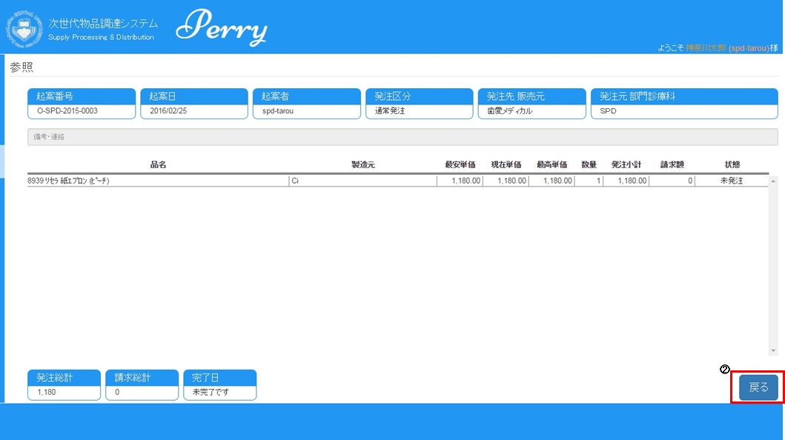

◇発注の起案画面が表示されます。
◇品名の選択を行います。
?@診療科名の確認：診療科に複数所属している場合は、該当する診療科名を選択してください。
?A品名の検索：”品目”、”販売元”、”品名”で商品の絞り込みができます。
”検索”をクリックすることにより、品名一覧が表示されます。
”クリア”をクリックすることにより、検索条件が初期化されます。
?B品名の候補選択：該当の品名をクリックすることにより、右側の確定エリアにコピーされます。繰り返し選択可能です。
◇品名の確定
（選択された品名がコピーされた例）
?@起案の内容 （参考）起案番号は、確定ボタンをおされた後に、自動登録されます。
?A選択された商品の内容が表示されます。複数選択された場合には、その数だけ行表示されます。
?B数量を半角数値で入力してください。入力せずに登録ボタンを押すと、エラーメッセージが表示されます。
?C”登録”をクリックすると表示内容が登録されます。また、”クリア”をクリックすると、確定内容が初期化されます。
（注）１起案では、同じ販売元の商品は、複数登録できますが、異なる商品がある場合は、別起案で登録してください。
前のページに戻る
◇発注を確認する。
ナビゲーションエリアより「発注」の”一覧”をクリックします。
◇発注一覧画面が表示されます。
?@検索エリア：初期値は、日付は表示された現在日付、状態のチェックはすべて、チェックなしになっています。日付と状態でデータの絞り込みが可能です。
?A発注一覧表示エリア：”検索”をクリックされた場合、検索条件に合致した情報が表示されます。
◇検索エリアで表示条件を設定します。
?@検索条件を設定して、”検索”をクリックします。
?A”クリア”をクリックすると、検索条件が初期値になります。
◇発注一覧の表示
検索条件に合致した情報が表示されます。
◇発注情報の詳細を確認します。
?@個々の発注情報の詳細を確認したい場合は、該当レコードの起案番号をクリックします。
?A”戻る”をクリックすると、発注一覧画面へ戻ります。

前のページに戻る
◇経費精算申請を行います。
ナビゲーションエリアより「経費精算申請」の”起案”をクリックします。
◇経費精算申請画面が表示されます。
?@診療科名の確認：診療科に複数所属している場合は、該当する診療科名を選択してください。
?A勘定科目の確認：リストから該当する項目を選択してください。
?B行の左端の”＋”をクリックすると、現在日付が表示されます。続けて複数項目の登録が可能です。
◇経費精算の詳細情報を記入してください。（品名、数量、単価等）
(注）必須項目は、診療科名、勘定科目、品名、数量、単価です。数量、単価は、半角数値での入力になります。
下記は、例題です。
?@記入が終了したら、”登録”をクリックしてください。また、"クリア”をクリックすると記述内容が初期化されます。
前のページに戻る
◇パスワードの変更を行います。
?@ナビゲーションエリアより「その他」の”パスワード変更”をクリックします。
◇パスワードの変更画面が表示されます。
旧パスワードを入力し、新パスワードを入力します。新パスワード（確認用）を再度入力して、”変更”をクリックします。
(注）パスワードは、８文字以上３２文字以内での登録になります。
前のページに戻る